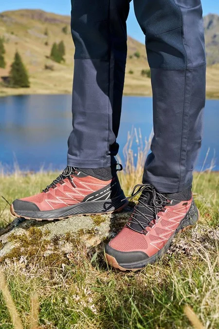

Выбор альпинистских ботинок

Ботинки задают уровень комфорта и безопасности на всем маршруте, поэтому подбор начинается с условий: температура, длительность, рельеф, совместимость с кошками.
Для холодных и высотных выходов важна теплоизоляция и влагозащита, для более сухих и техничных участков — точность посадки и контроль на скале.
Нога должна быть зафиксирована без «болтания» пятки, но без болезненных точек давления в носке и подъеме. Плотная, но комфортная посадка снижает риск мозолей и потери чувствительности.
Примерять ботинки лучше в тех носках, в которых вы реально ходите в горах. Также важно проверять шнуровку в динамике: подъем по лестнице, спуск, приседания.
Частая ошибка — покупать слишком маленький размер ради «точности». На длительных переходах стопа немного отекает, и избыточно тесная посадка быстро превращается в проблему.
После покупки полезно сделать несколько тренировочных выходов до основного маршрута. Ботинки и стопа должны «сработаться» в контролируемых условиях, а не в день штурма.